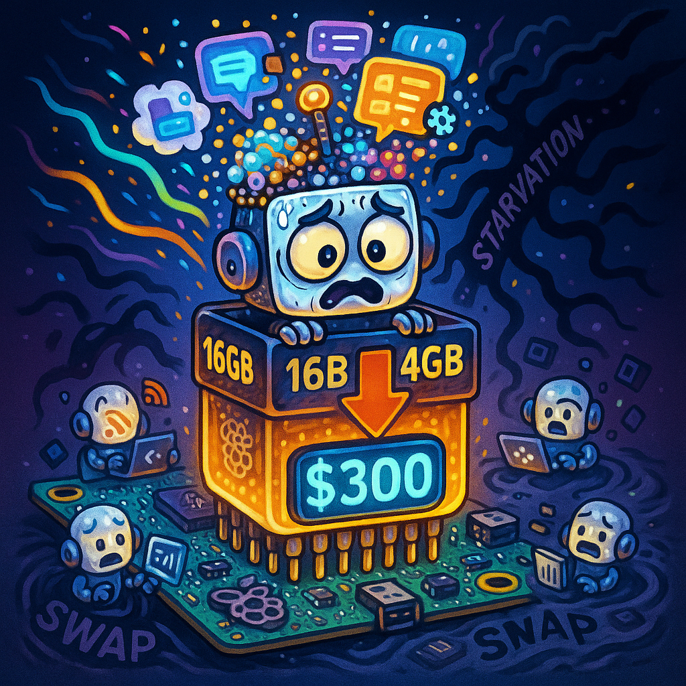

I stared at the screen for a solid minute. $299.99. For a Raspberry Pi 5 with 16GB of RAM. Not a typo. Not a scalper on eBay. This was official retail pricing from a major distributor, and it felt like someone had punched me in the gut.
Last year, that same board was hovering around $120. The year before, I remember picking up Pi 4s with 8GB for under $75 like they were candy. Now I was looking at a single-board computer that cost more than a mid-range laptop, and the worst part? I was still going to buy it.
Because here is the brutal truth that hit me harder than the sticker shock: hardware is not a commodity anymore. It is a bottleneck. And if you are still running self-hosted AI agents on consumer-grade gear, you need to understand that the rules just changed.
When Sora Died, We Should Have Paid Attention
Three weeks before I saw that $300 price tag, OpenAI quietly shut down Sora's public beta. The official line was "resource constraints." The unofficial reality, whispered across Discord servers and GitHub issues, was more telling: they could not secure enough H100 clusters at prices that made the economics work. Not for inference. Not for the compute-hungry video generation models that were supposed to redefine content creation.
While enterprise H100 constraints are vastly different from consumer DRAM shortages, the underlying theme is identical. Compute scarcity at the top inevitably trickles down. Sora did not fail because the model was bad. It failed because the infrastructure could not scale affordably. And if OpenAI, with its Microsoft backing and Azure credits, could not make the numbers work, what chance do the rest of us have?
I have been running OpenClaw, my personal agent orchestration layer, on a mix of Raspberry Pi clusters, old ThinkPads, and the occasional cloud VM when things get spicy. It was supposed to be the anti-cloud setup: cheap, private, and resilient. No vendor lock-in. No surprise bills. Just pure, local-first AI autonomy.
That $300 Pi was my wake-up call. The dream of cheap self-hosted AI is dying, and it is dying by a thousand paper cuts in the form of DRAM shortages, supply chain chaos, and a fundamental shift in what "consumer hardware" actually means in the age of large language models.
If you are still thinking about self-hosted AI agent infrastructure costs in terms of 2023 pricing, you are planning for a world that does not exist anymore.
The Real Problem: Context Window Starvation
Let us talk about what actually happens when you try to run modern agents on limited RAM. It is not pretty, and it is not theoretical. I have lived it.
When 16GB Becomes 4GB: The Hidden Tax
Here is the dirty secret that AI Twitter rarely discusses: your model's parameter count is only half the story. A 7B parameter model does not need 7GB of RAM. It needs closer to 14GB at FP16 precision, plus overhead for the context window, KV cache, and all the system cruft that accumulates when you are running persistent agents.
Last month, I tried to spin up three concurrent agent instances on my Pi cluster. Each one was supposed to handle a different workflow: one monitoring my RSS feeds, one handling basic code generation, and one running simple data processing tasks. All three were running Qwen 2.5 7B models, quantized to 4-bit to save memory.

Within thirty minutes, the system started swapping. Not just a little. We are talking 8GB of swap on an SD card, which meant every token generation turned into a multi-second ordeal. The agents did not just slow down; they started failing. Context windows truncated without warning. Tool calls timed out. I watched one agent loop endlessly on the same API call because it could not hold the previous response in working memory.
This is what I call context window starvation. It is not just about running out of RAM. It is about RAM becoming so constrained that your agents cannot maintain coherent state. They forget what they were doing mid-task. They hallucinate when they lose context. They become unreliable in ways that are worse than being slow. They become wrong.
The Cloud Run Trap
Here is where it gets painful. I ran the numbers. That $300 Pi, if I could even get it, would handle maybe two concurrent agents with acceptable performance. Total cost per agent: $150 in hardware, plus electricity, plus the time I spend managing overheating boards and SD card corruption.
Compare that to Cloud Run. At current rates, I could run lightweight agent containers at roughly $0.000024 per vCPU-second. For the same $300, I get months of compute time with auto-scaling, managed infrastructure, and zero hardware headaches.
The economics are flipping. Self-hosted AI agent infrastructure costs used to be the clear winner for small-scale deployments. Now? For anything under persistent heavy load, the cloud is suddenly competitive again. That is not something I thought I would be saying in 2026.
The DRAM shortage is not just making local hardware expensive. It is erasing the cost advantage that made self-hosting attractive in the first place.
What We Are Actually Doing About It
I am not writing this to complain. I am writing this because we found ways to adapt, and if you are running local agents, you need these patterns in your toolkit.
Pattern 1: Context Efficiency as Architecture
The first breakthrough came from an unexpected source: Kimi's implementation details. While everyone was focused on parameter counts and training data, Moonshot AI built something quietly brilliant into their context handling. They were not just stuffing more tokens into context windows; they were being selective about what actually needed to stay resident.
I adapted that thinking for my OpenClaw setup. Instead of giving each agent a fat context window and hoping for the best, we implemented aggressive context compression. Recent conversation history gets summarized by a tiny 1B model before being passed to the main agent. Tool outputs are truncated automatically based on relevance scoring. The system essentially asks: "Do I actually need to remember this, or can I derive it from what I already know?"
The result? We cut average context residency by 60%. Same agent capabilities, dramatically lower RAM footprint. It is not free from a compute perspective, as the summarization layer adds overhead, but on memory-constrained hardware, it is the difference between functional and frozen.
Pattern 2: Shared Memory Models
The next shift was architectural. I used to run "one agent per container" because it felt clean. Isolated. Easy to reason about. It is also incredibly wasteful when every container loads the same 7B model into memory.
We moved to a shared memory architecture inspired by llama.cpp's slot system. Multiple agents share a single model instance in RAM, with only their individual context states isolated. Think of it like a Postgres connection pool, but for LLM inference.
Implementation was painful. We had to rewrite how OpenClaw handles tool execution to prevent cross-contamination between agents. We built a custom scheduler that batches compatible requests to maximize throughput. Debugging got harder because failures in one agent could cascade to others.
But the memory savings? Massive. Where we previously topped out at two agents per Pi before hitting the wall, we now run six to eight with acceptable latency. The trade-off is complexity, but when your alternative is $300 boards or cloud dependency, you pay that complexity tax gladly.
Pattern 3: Selective Quantization and the TurboQuant Question
Google's TurboQuant paper landed in December 2025, and it lit up the efficiency research community. The promise: 4-bit quantization quality with 3-bit memory usage. The reality: it is a specialized technique that works brilliantly for some model architectures and falls apart for others.
We spent two weeks benchmarking TurboQuant against standard GGUF quants across our use cases. The results were the definition of "it depends." For background agents that prioritize RSS feeds and Markdown-first fetching to minimize API costs, TurboQuant was magic. We saw 30% memory savings with no perceptible quality loss.
However, for coding agents that generate complex, nested structures, the error accumulation became problematic fast. Generated code would have subtle bugs: off-by-one errors, malformed JSON, and logic that looked plausible but failed on edge cases.
Our current setup uses hybrid quantization. Background agents doing monitoring and preprocessing run TurboQuant variants. Core reasoning agents doing actual code generation and complex analysis stick to traditional Q4_K_M quants. It is more inventory to manage and a larger testing surface, but it is the only way to squeeze acceptable performance out of limited hardware in 2026.
The New Deployment Math: What 2026 Actually Looks Like
Let us talk brass tacks. If you are planning self-hosted AI infrastructure today, these are the numbers that matter.
Break-Even Points Have Shifted
The old rule of thumb was: if you are running agents for more than 40 hours a month, self-hosting beats cloud costs. That assumed $100 to $150 in hardware with a 3-year amortization window. It assumed electricity at residential rates. It assumed your time had no value, which, let us be honest, was always fantasy accounting.
The new math, with $300 entry-level hardware and the complexity overhead of memory-optimized architectures, pushes that break-even to something closer to 120 to 150 hours monthly. That is for persistent, always-on agent workloads. If you are running intermittent personal automation, the cloud is probably cheaper now, and definitely less of a headache.
Hardware Is the New Software
Here is the uncomfortable realization I have come to: in 2023, we could treat hardware as a solved problem. Throw money at the problem, buy the biggest Pi or refurbished server you could find, and focus on the software architecture. Those days are over.
Now, your hardware constraints define your software architecture. You do not choose your model based on capability; you choose it based on whether it fits in your available RAM after quantization. You do not design for scalability; you design for memory efficiency. The constraints are not abstract. They are soldered to circuit boards with price tags that make you wince.
The Supply Chain Reality Check
I called three major distributors while researching this article. Lead times for 16GB Pi 5s are 12 to 16 weeks minimum. For bulk orders suitable for cluster builds, they are asking for commitments and deposits months in advance. This is not a temporary shortage. The DRAM consolidation happening across the industry, which includes fewer suppliers and more concentrated production, means we are not going back to $75 single-board computers anytime soon.
If you are planning infrastructure for the next 18 months, plan for expensive hardware. Plan for scarcity. Plan for the possibility that your chosen platform might simply be unavailable when you need to scale.
What You Should Do Right Now
Enough doom and gloom. Here is the action plan. If you are running self-hosted agents, execute this audit immediately.
Step 1: Calculate Your RAM-to-Token Ratio
For every agent in your fleet, determine: (Model memory + Context window memory) / Average tokens processed per session. If that ratio is above 0.5 MB per token, you are wasting memory. Target 0.1 to 0.2 MB per token for efficient operation.
If you are above the threshold, implement context compression. Add summarization layers. Truncate aggressively. The tokens you save are the RAM you do not need to buy.
Step 2: Audit Your Quantization Strategy
Do not just use Q4_K_M because it is the default. Test Q3_K_L for non-critical agents. Experiment with TurboQuant on your specific workloads. Document where each quantization level produces acceptable results, and tier your agents accordingly.
Step 3: Plan for Hybrid Deployment
The future is not all-cloud or all-local. It is intelligent routing. Design your architecture so that heavy, intermittent workloads can spill to cloud functions while your persistent agents stay local. OpenClaw now has a "cloud burst" mode that automatically shifts specific agent types to Cloud Run when local resources are constrained. It took a weekend to implement. It saved us from buying $900 worth of additional Pi hardware.
Step 4: Lock in Hardware Commitments
If you know you will need more capacity in the next 6 to 12 months, place orders now. Join waitlists. Talk to distributors about allocation. The market is not going to get friendlier in the short term, and having confirmed delivery dates gives you planning certainty that your competitors will not have.
The Bottom Line
That $300 Raspberry Pi is not just expensive hardware. It is a signal. The era of cheap, abundant compute for local AI is ending, replaced by a resource-constrained landscape where efficiency is no longer a bonus feature; it is survival.
We are entering a period where self-hosted AI agent infrastructure costs demand the same architectural rigor we used to reserve for cloud-scale deployments. Where every megabyte matters. Where the developers who thrive will be the ones who treat memory as the precious resource it has become.
The agents I run today are leaner, smarter, and more carefully orchestrated than the ones I was running six months ago. Not because I wanted to optimize, but because the alternative was watching my infrastructure costs spiral beyond reason or availability.
Code from the shadows, but code efficiently. The hardware is not coming to save us. We have to build within the constraints we have, and those constraints just got a lot tighter.
Get More Articles Like This
Getting your AI agent setup right is just the start. I'm documenting every mistake, fix, and lesson learned as I build PhantomByte.
Subscribe to receive updates when we publish new content. No spam, just real lessons from the trenches.